Introduction to CloudLab#
1. Access CloudLab#
Visit CloudLab’s website
Click “Request an Account”
Fill in the information as follows, and click “Submit Request” afterward
Username: Create a unique username. You can attempt to reuse your Clemson username.Full Name: Provide your full name.Email: Provide your Clemson email addressCountry: United StatesState: South CarolineInstitution: Clemson UniversitySSH Public Key: If you know where to get this public key file, you can upload it now. We can/will do it later as well.Password/Confirm Password: Create a secure password for your account.Join Existing Project:Clemson-RCDE
Wait for a confirmation email to arrive in your
clemson.edumailbox. You might have to resubmit a new request if you don’t see this email in about half an hour.After your account is confirmed, the instructor will be able to see your application and can grant you access to CloudLab.
If you already had a CloudLab account, you can select
Start/Join Projectunder your username, then selectJoin Existing Projectand provide the nameClemson-RCDE.
2. What is CloudLab#
Experimental testbed for future computing research
Built upon the GENI infrastructure
Allow researchers control to the bare metal
Diverse, distributed resources at large scale
Allow repeatable and scientific design of experiments
What is GENI
Global Environment for Networking Innovation
Combining heterogeneous resource types, each virtualized along one or more suitable dimensions, to produce a single platform for network science researchers”
Key components:
GENI racks: virtualized computation and storage resources
Software-defined networks (SDNs): virtualized, programmable network resources
WiMAX: virtualized cellular wireless communication
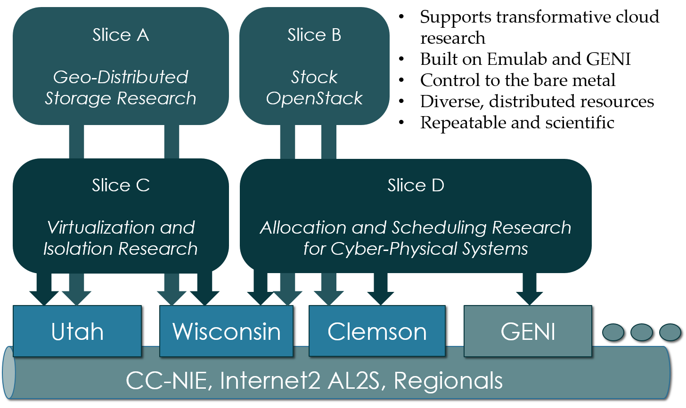
Berman, M., Chase, J.S., Landweber, L., Nakao, A., Ott, M., Raychaudhuri, D., Ricci, R. , and Seskar, I., 2014. GENI: A federated testbed for innovative network experiments. Computer Networks, 61, pp.5-23.
Key experimental concepts
Sliceability: the ability to support virtualization while maintaining some degree of isolation for simultaneous experiments
Deep programmability: the ability to influence the behavior of computing, storage, routing, and forwarding components deep inside the network, not just at or near the network edge.
3. CloudLab Hardware#
CloudLab started out as three primary sites from University of Utah, University of Wisconsin, and Clemson University.
Low-power ARM64 (785 nodes)
315 m400: 1X 8-core ARMv8 at 2.4GHz, 64GB RAM, 120GB flash
270 m510: 1X 8-core Intel Xeon D-1548 at 2.0 GHz, 64GB RAM, 256 GB flash
200 xl170: 1X 10-core Intel E5-2640v4 at 2.4 Ghz, 64 GB RAM, 480 GB SSD
90 c220g1: 2X 8-core Intel Haswell at 2.4GHz, 128GB RAM, 1X 480GB SDD, 2X 1.2TB HDD
10 c240g1: 2X 8-core Intel Haswell at 2.4GHz, 128GB RAM, 1X 480GB SDD, 1X 1TB HDD, 12X 3TB HDD
163 c220g2: 2X 10-core Intel Haswell at 2.6GHz, 160GB RAM, 1X 480GB SDD, 2X 1.2TB HDD
7 c240g2: 2X Intel Haswell 10-core at 2.6GHz, 160GB RAM, 2X 480GB SDD, 12X 3TB HDD
224 c220g5: 2X 10-core Intel Skylake at 2.20GHz, 192GB RAM, 1TB HDD
32 c240g5: 2X 10-core Intel Skylake at 2.20GHz, 192GB RAM, 1TB HDD, 1 NVIDIA P100 GPU
4 c4130: 2X 8-core Intel Broadwell at 3.20GHz, 128GB RAM, 2X 960GB HDD, 4 NVIDIA V100
96 c8220: 2X 10-core Intel Ivy Bridge at 2.2GHz, 256GB RAM, 2X 1TB HDD
4 c8220x: 2X 10-core Intel Ivy Bridge at 2.2GHz, 256GB RAM, 8X 1TB HDD, 12X 4TB HDD
84 c6420: 2X 14-core Intel Haswell at 2.0GHz, 256GB RAM, 2X 1TB HDD
2 c4130: 2X 12-core Intel Haswell at 2.5GHz, 256GB RAM, 2X 1TB HDD, 2 NVIDIA K40m
2 dss7500: 2X 6-core Intel Haswell at 2.4GHz, 128GN RAM, 2X 126GB SSD, 45X 6TB HDD
72 c6420: 2X 16-core Intel Skylake at 2.6GHz, 386GB RAM, 2X 1TB HDD
6 ibm8335: 2X 10-core IBM POWER8NVL at 2.87GHz, 512GB RAM, 1X 2TB HDD, 2 NVIDIA GV100GL
15 r7515: 2X 32-core AMD EPYC Rome at 2.9GHz, 512GB RAM, 1X 2TB HDD, 2 NVIDIA GV100GL
4. Setup SSH#
Log into Palmetto
All Palmetto accounts have SSH keys ready.
Get your Palmetto account public key
Run the following commands to print the key to the terminal screen.
cd
cat ~/.ssh/id_rsa.pub
Very carefully, use the mouse to paint over the key, starting from
ssh-rsa ...until...@login001.palmetto.clemson.edu.Do not have any extra spaces anywhere.
Log into CloudLab, click on your username (top right) and select
Manage SSH Keys:
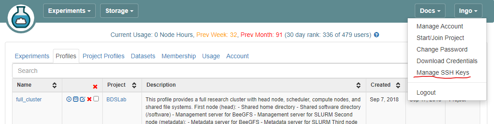
Paste the key into the
Keybox and clickAdd Key
5. Setup GitHub repository#
Create new GitHub repository
Go to your GitHub account, under
Repositories, selectNew.You can select any name for your repo.
It must be
public.The
Add a README filebox must be checked.Click
Create repositorywhen done.
Adding file to repository
Click
Add fileand selectCreate new fileType
profile.pyfor the file name and enter the content below:
Click
Commit new filewhen done.
6. Setup CloudLab experimental profile#
Login to your CloudLab account, click
Experimentson top left, selectCreate Experiment Profile.
Create New Profile
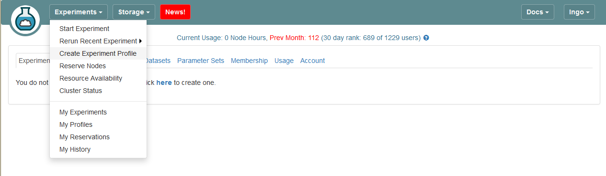
Click on
Git RepoYou might not have a dropdown
Projectbox, unless you are members of multiple CloudLab projects.
Create New Profile
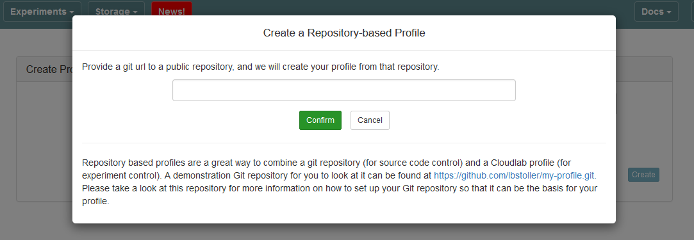
Open another browser tab, go to the previously created Git repository, and get the clone URL (HTTPS option) of your Git repository
HTTPS clone link
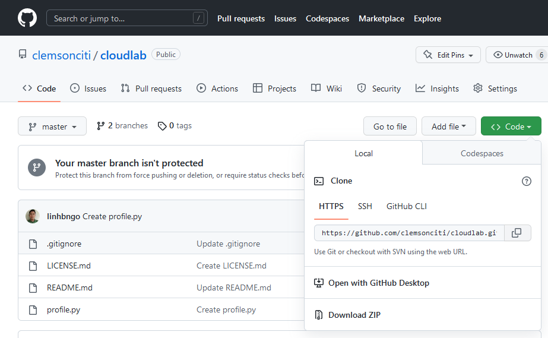
Paste the URL of your previously created Git repo here and click
ConfirmThis must be the
HTTPSoption.
Paste Git clone link

Enter the name for your profile, put in some words for the Description.
You will not have a drop-down list of Project.
Click
Createwhen done.
Complete and create profile
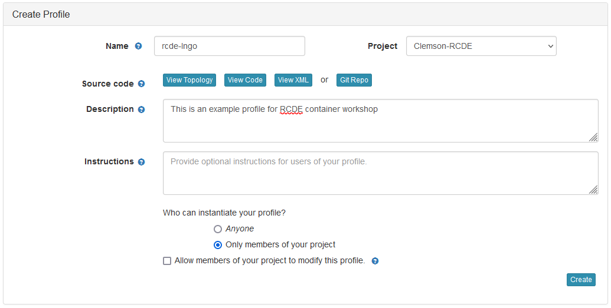
Click
Instantiateto launch an experiment from your profile.
Instantiate an experiment from a profile
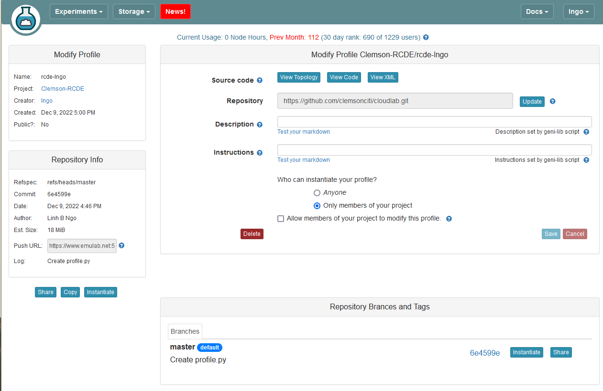
Click
Nexton the first tab,Select a Profile.Select a Cluster from Wisconsin, Clemson, or Emulab, then click
Next.
Select cluster
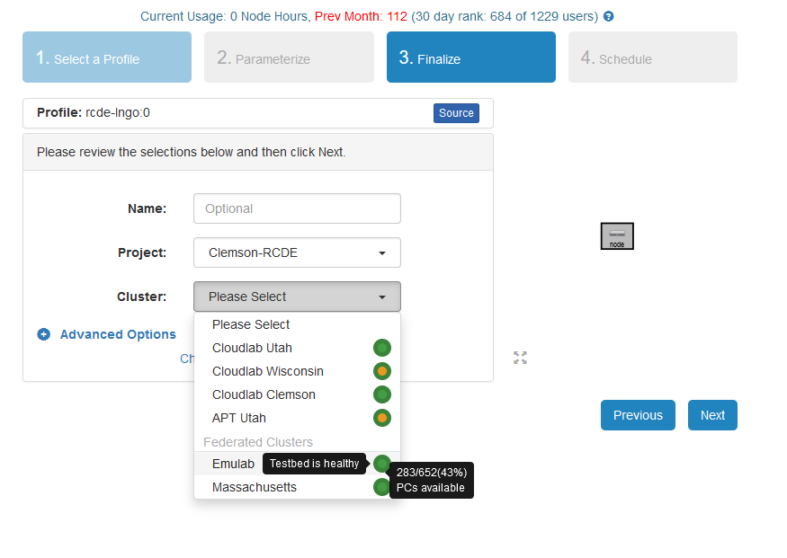
Do not do anything on the next
Start on date/timescreen. ClickFinish.Your experiment is now being
provision, and thenbooting
Provisioning and Booting
 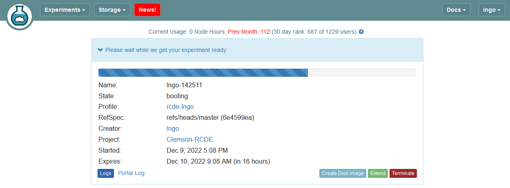
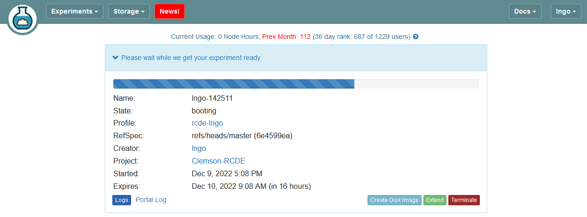
When it is ready, you can use the provided SSH command to log in to your experiment (assuming your key was set up correctly).
The command is in the List View tab.
Provisioning and Booting
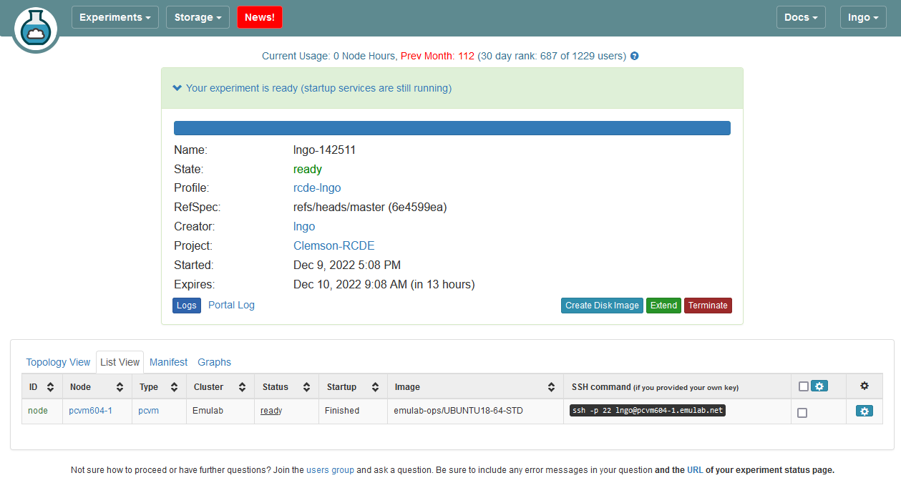 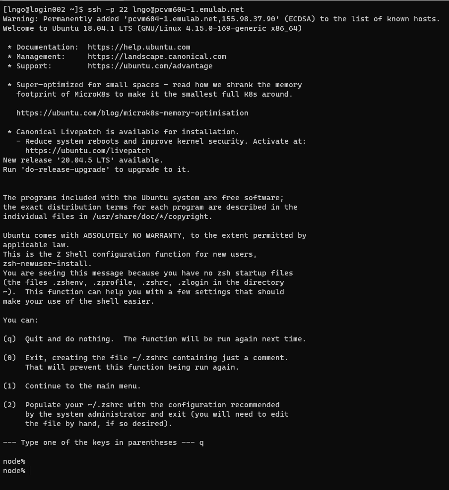
The automated script included in the profile setup the Apache web server. This can be accessed by using the DNS of the experiment node in List View tab.
Automated installation of Apache2
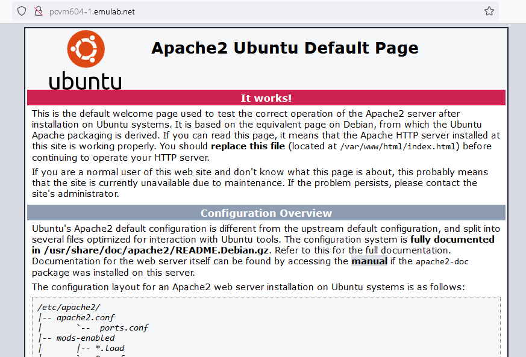